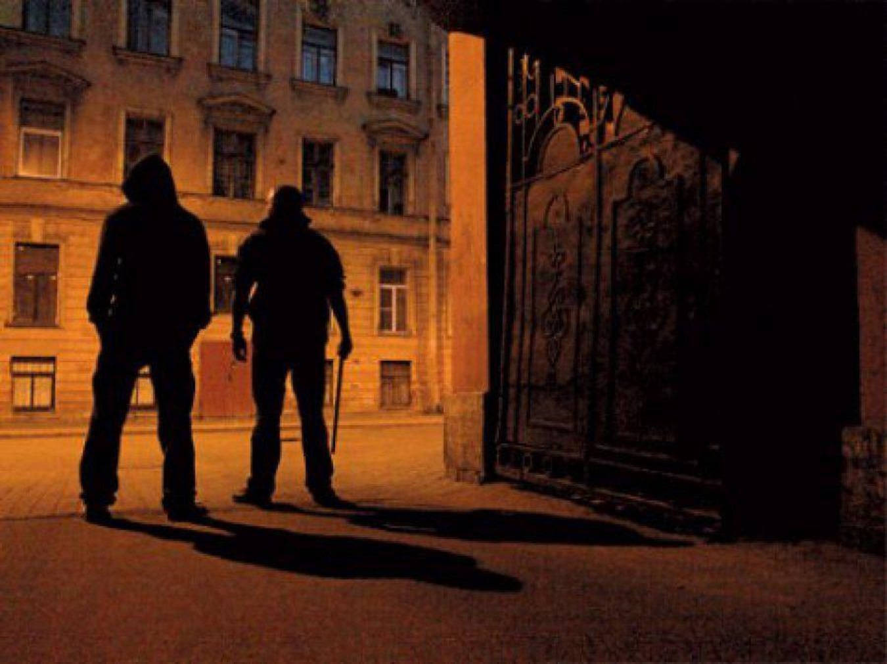

Выбор 2: Алексей решил не рисковать и обошел переулок.
Он ускорил шаг, чувствуя, как сердце стучит в груди.
Странные звуки продолжали доноситься из-за его спины, но он старался не оборачиваться, чтобы не привлекать внимание.
Вдруг он услышал быстрые шаги позади.
Алексей обернулся и увидел двух мужчин, которые вышли из переулка и теперь следовали за ним.
Их лица были скрыты тенями, но в их глазах блеск недоброжелательства был очевиден.
Алексей почувствовал, как его охватывает паника.
Он мог:
Увеличить скорость и попытаться убежать.
Найти укрытие и спрятаться.
